こんにちは、Power BI サポート チームの亀田です。
Power BI や Microsoft Fabric の利用が広がると、組織内にどのようなワークスペースやアイテムが存在するかを継続的に把握したい場面が増えてきます。
Microsoft Fabric では、Scanner API を使用してテナント内のメタデータを取得できます。本記事では、Scanner API の概要を説明し、Semantic Link (SemPy) と Fabric Notebook を使用してフル スキャンを実行します。取得結果を Lakehouse に保存し、分析テーブル、Direct Lake セマンティック モデル、Power BI レポートを作成するところまでをご紹介します。
増分スキャン、Fabric Data Factory による定期実行、削除済みアイテムの反映などは、第 2 回の記事で説明します。
重要
本記事は弊社公式ドキュメントの公開情報を元に構成しておりますが、
本記事編集時点と実際の機能に相違がある場合がございます。
最新情報につきましては、参考情報として記載しておりますドキュメントをご確認ください。
目次
Scanner API の説明
Scanner API は、Power BI および Microsoft Fabric の管理 REST API の一部です。組織内の Fabric アイテムをカタログ化し、ガバナンスや棚卸しに利用できるメタデータを取得します。
Scanner API はデータ ソース内の業務データを取得する API ではありません。取得対象は、ワークスペース、レポート、セマンティック モデル、データフローなどのアイテム情報や、それらの構成を表すメタデータです。
取得できる主な情報
Scanner API では、主に以下の情報を取得できます。
| 分類 | 取得できる情報の例 |
|---|---|
| ワークスペース | ID、名前、種類、状態、容量 ID |
| Fabric アイテム | アイテム名、所有者、作成日時、更新日時、秘密度ラベル、保証の状態 |
| Power BI レポート | レポート ID、名前、関連するセマンティック モデル、更新日時 |
| セマンティック モデル | テーブル、列、メジャー、リレーションシップ、ストレージ モード |
| データ ソース | データ ソースの種類、接続先、ゲートウェイとの関連情報 |
| 系列 | 上流および下流のアイテム間の依存関係 |
| 式 | DAX 式、Power Query のマッシュアップ式 |
本記事のサンプルでは、セマンティック モデル スキーマと系列情報を取得します。DAX 式、マッシュアップ式、アイテムのユーザー情報は取得しません。最初の実装では取得範囲と機密情報の取り扱いを必要最小限にします。。
Note
参考# Admin - WorkspaceInfo GetScanResult - REST API (Power BI Power BI REST APIs) | Microsoft Learn
Scanner API の処理フロー
Scanner API の処理は、以下の 4 つの API で構成されます。
| 順序 | API | 用途 |
|---|---|---|
| 1 | GetModifiedWorkspaces | スキャン対象となるワークスペース ID を取得する |
| 2 | PostWorkspaceInfo | ワークスペースのスキャンを開始し、scanId を取得する |
| 3 | GetScanStatus | scanId を使用して処理状態を確認する |
| 4 | GetScanResult | 完了したスキャンの結果を取得する |
PostWorkspaceInfo で開始したスキャンは非同期で実行されます。GetScanStatus の結果が Succeeded になるまで待ってから、GetScanResult を呼び出します。
1 回の呼び出しでスキャンできるワークスペースは最大 100 件です。100 件を超える場合は、ワークスペース ID を 100 件ごとに分割します。
本記事では 4 つの API を個別に実装せず、Semantic Link の sempy.fabric.admin パッケージを使用します。scan_workspaces 関数は、PostWorkspaceInfo、GetScanStatus、GetScanResult の呼び出しと状態確認をまとめて実行します。
Note
参考# メタデータのスキャンを実行する - Microsoft Fabric | Microsoft Learnhttps://learn.microsoft.com/ja-jp/rest/api/power-bi/admin/workspace-info-get-scan-result)
参考# sempy.fabric.admin パッケージ - Microsoft Fabric | Microsoft Learn
Notebook からフル スキャンを実行する
今回作成する構成
第 1 回では、以下の構成を作成します。
1 | Scanner API |
すべてのテーブルは、1 つの Lakehouse ”lh_scanner_metadata” に作成します。
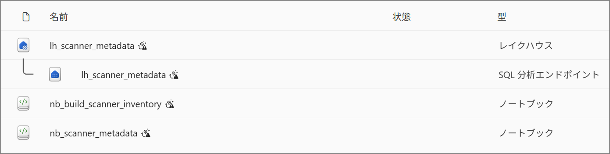
前提条件
本記事のサンプルを実行するには、以下の条件を満たす必要があります。
- Microsoft Fabric 容量に割り当てられたワークスペースを使用できること
- Lakehouse と Notebook を作成できること
- Notebook を実行するユーザーが Fabric 管理者であること
- Fabric 管理ポータルで [詳細なメタデータを使用して管理者 API の応答を強化する] が有効であること
- sempy.fabric.admin を含む Semantic Link を利用できること
本記事では DAX 式とマッシュアップ式を取得しないため、[DAX 式とマッシュアップ式を使用して管理者 API の応答を強化する] は必須ではありません。
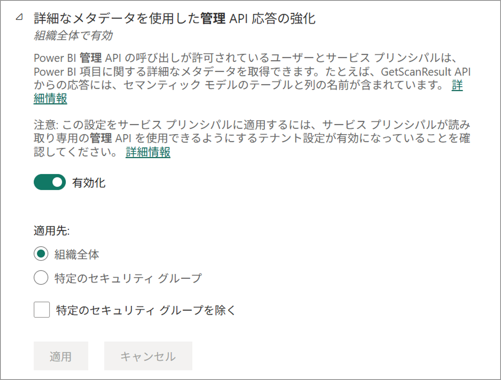
警告
Scanner API の結果には、ユーザー名、メール アドレス、データ ソース情報、セマンティック モデルの構造など、組織内の管理情報が含まれる場合があります。Lakehouse と Notebook へのアクセスは、管理上必要なユーザーに限定してください。
Lakehouse と Notebook を作成する
- Fabric 容量に割り当てられたワークスペースを開きます。
- [新しい項目] から Lakehouse を作成します。例として ”lh_scanner_metadata” という名前を使用します。
- 同じワークスペースで Notebook を作成します。例として ”nb_scanner_metadata” という名前を使用します。
- Notebook の Lakehouse エクスプローラーから ”lh_scanner_metadata” を追加し、既定の Lakehouse として設定します。
- Lakehouse を新たに既定として設定した場合は、Notebook のセッションを再起動します。
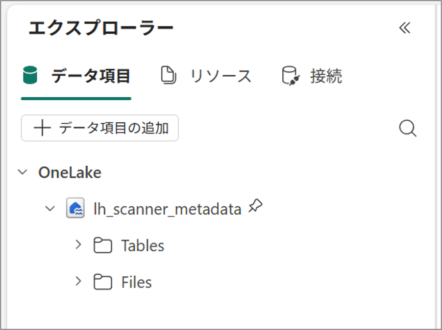
Note
参考# Notebook の使用方法 - Microsoft Fabric | Microsoft Learn
参考# Lakehouse と Delta テーブル - Microsoft Fabric | Microsoft Learn
Semantic Link を更新する
次のコード セルでバージョンとインポートを確認します。
※画像は 2026 年 8 月実行時点でのバージョンです。更新時期によりバージョンが異なる場合がございます。
1 | import sempy |
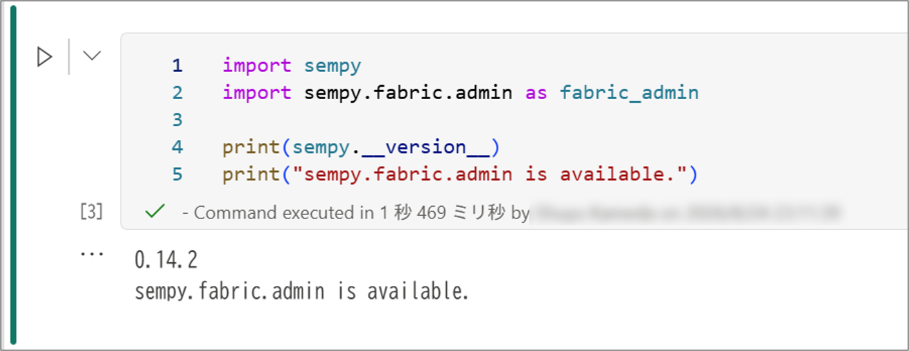
Fabric Runtime に含まれる Semantic Link が古い場合、以下のエラーが発生します。
1 | ModuleNotFoundError: No module named 'sempy.fabric.admin' |
その場合、 Notebook の最初のコード セルで、Semantic Link を更新してください。
1 | %pip install -U semantic-link |
フル スキャンを実装する
次のコード セルに、以下のスクリプトを貼り付けます。
このスクリプトは、個人用ワークスペースと非アクティブなワークスペースを除外してフル スキャンを実行します。Scanner API の応答は ”scanner_raw、実行結果は scanner_runs に保存します。
1 | from datetime import datetime, timezone |
”scanner_raw” には 1 バッチにつき 1 行を追加します。 ”scanner_runs” には、すべてのバッチが成功した場合だけ 1 行を追加します。
実行結果を確認する
初回実行の出力例は以下のとおりです。
1 | Run ID: 20260824T141148Z |
Lakehouse を開き、 ”scanner_raw” と ”scanner_runs” が作成されていることを確認します。
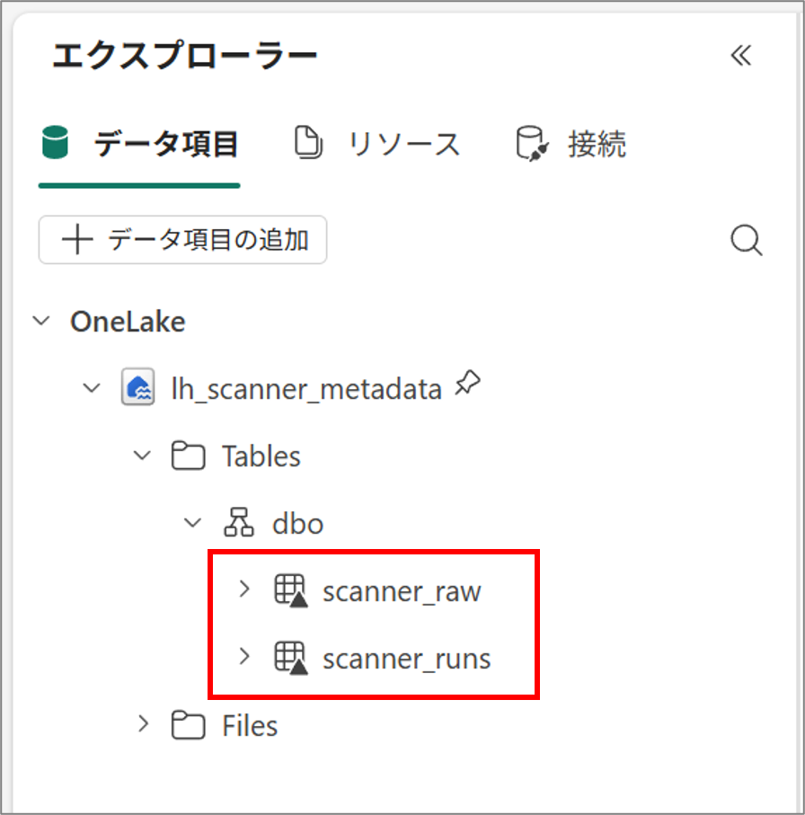
”scanner_raw.payload_json” には、 workspaces 配列としてワークスペースの情報が保存されています。
以下のスクリプトを実行することで、実行内容を確認することができます。
1 | from pyspark.sql import functions as F |
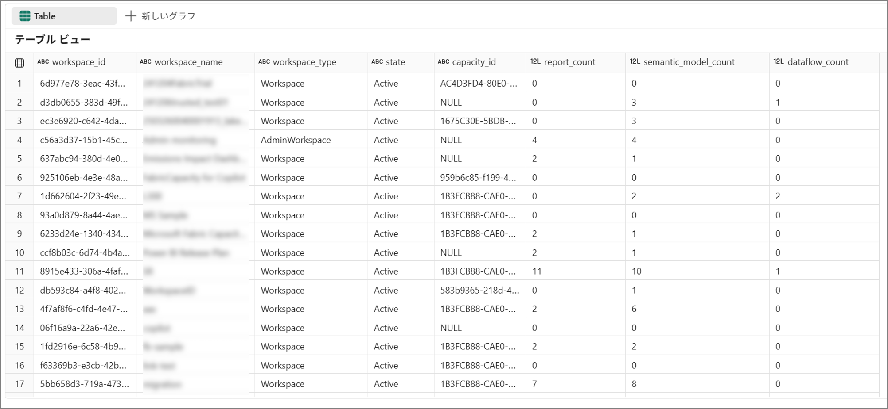
分析テーブルを作成する
Power BI から ”payload_json” を直接参照すると、JSON の展開処理がレポート側で必要となります。
変換処理を別の Notebook で行い、ワークスペースとアイテムを分析用 Delta テーブルへ展開します。
分析用 Notebook
”nb_build_scanner_inventory” という Notebook を作成し、 ”lh_scanner_metadata” を既定の Lakehouse として設定します。
本記事ではレポート作成に必要なワークスペースと主要アイテムだけを展開します。列、メジャー、データ ソース、系列の詳細は、今後の拡張として必要に応じて追加できます。
以下がスクリプト例です。
1 | import json |
分析テーブルを確認する
Lakehouse に以下の 3 テーブルが作成されます。
- artifact_inventory
- scan_run_inventory
- workspace_inventory
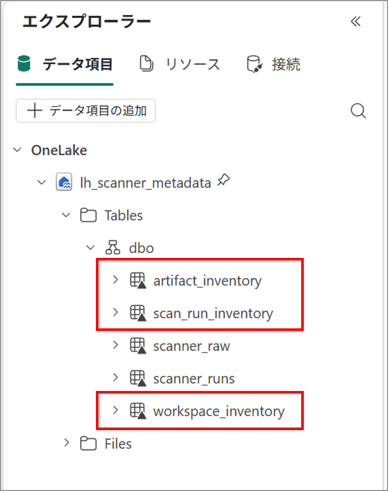
続いて、Lakehouse の表示を [SQL 分析エンドポイント] に切り替えます。エクスプローラーに 3 テーブルが表示されない場合は、エクスプローラー上部の [更新] を選択します。
SQL 分析エンドポイントでは、Lakehouse に作成した Delta テーブルのメタデータがバックグラウンドで同期されます。新しいテーブルが反映されるまで時間がかかる場合があるため、3 テーブルが表示されてからセマンティック モデルを作成します。
Note
参考# SQL 分析エンドポイントのメタデータ同期 - Microsoft Fabric | Microsoft Learn
参考# Lakehouse チュートリアル: セマンティック モデルとレポートを作成する - Microsoft Fabric | Microsoft Learn
Power BI レポートを作成する
Direct Lake セマンティック モデル
”lh_scanner_metadata” の [SQL 分析エンドポイント] を開きます。
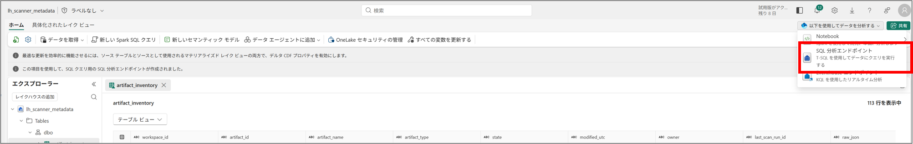
エクスプローラーに ”workspace_inventory”、”artifact_inventory”、”scan_run_inventory” が表示されていることを確認します。表示されない場合は、エクスプローラー上部の [更新] を選択します。
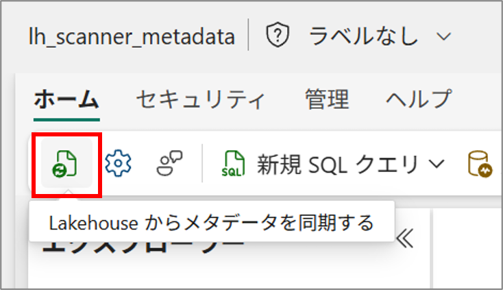
[新しいセマンティック モデル] を選択します。
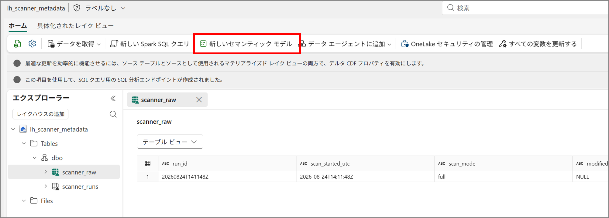
モデル名として ”sm_scanner_inventory” を入力します。
[OneLake の Direct Lake] で ”workspace_inventory”、 ”artifact_inventory”、 ”scan_run_inventory” を選択します。
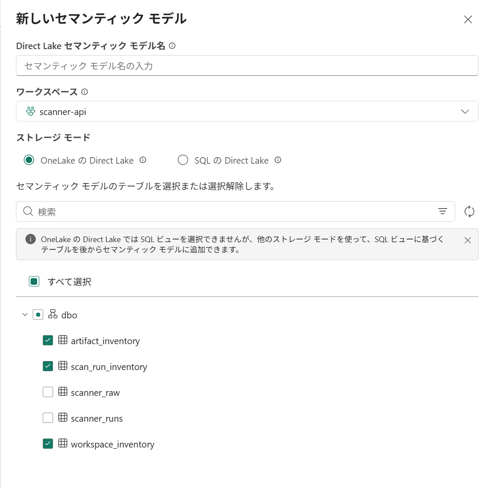
”workspace_inventory” の [workspace_id] を 1 側、 ”artifact_inventory” の [workspace_id] を多側とする 1 対多のリレーションシップを作成します。
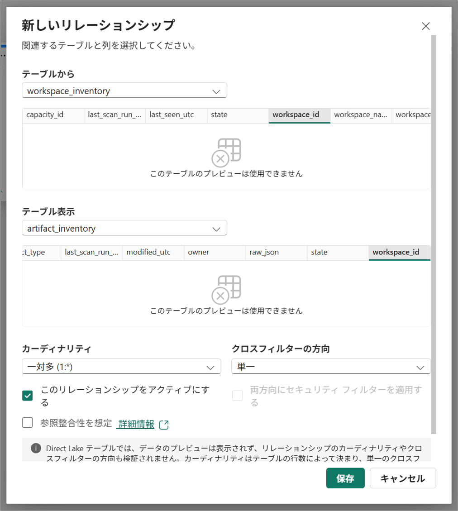
raw_json や ID など、レポート作成者が使用しない列を非表示にします。
scan_run_inventory は実行履歴を表す独立したテーブルとして使用します。
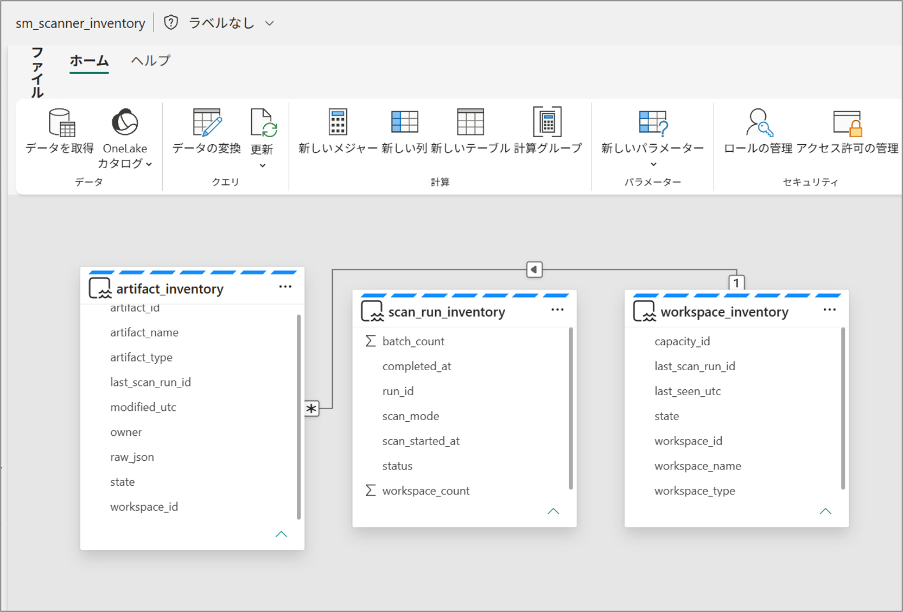
基本メジャー
以下のメジャーを作成します。
1 | Workspace Count = |
“scan_run_inventory” は独立したテーブルであるため、 “Last Successful Scan” はテナント全体の最終成功スキャン日時を返します。
Note
参考# Direct Lake の概要 - Microsoft Fabric | Microsoft Learn
参考# スター スキーマと Power BI での重要性について理解する - Power BI | Microsoft Learn
レポート ページ
上記で作成したセマンティック モデル ”sm_scanner_inventory” をもとにレポートを作成します。
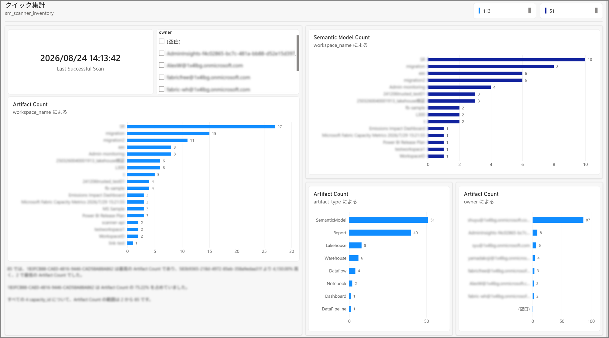
注意事項
- Scanner API の結果には組織内の管理情報が含まれる場合があります。Lakehouse、Notebook、セマンティック モデルへのアクセスを適切に管理してください。
- 更新または再発行されていないセマンティック モデルや特定の接続方式では、テーブル、列、式などのサブアーティファクト メタデータが返されない場合があります。
- 本記事のフル スキャンを再実行すると、 “scanner_raw” と “scanner_runs” に新しい実行が追加されます。分析テーブルは最新の成功したフル スキャンで置き換えられます。
おわりに
本記事では、Scanner API の概要を説明し、Semantic Link と Fabric Notebook を使用してテナントのフル スキャンを実行しました。また、結果を Lakehouse の Delta テーブルへ保存し、分析テーブル、Direct Lake セマンティック モデル、Power BI レポートを作成しました。
第 2 回では、前回成功したスキャンの開始時刻を利用した増分スキャン、Fabric Data Factory による定期実行、増分結果を分析テーブルへ反映する方法をご紹介します。
以上、本ブログが少しでも皆さまのお役に立てますと幸いでございます。
※本情報の内容（添付文書、リンク先などを含む）は、作成日時点でのものであり、予告なく変更される場合があります。